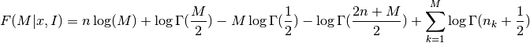
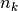
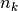

knuth_bin_width¶
-
astropy.stats.knuth_bin_width(data, return_bins=False, quiet=True) [edit on github][source]¶ Return the optimal histogram bin width using Knuth’s rule.
Knuth’s rule is a fixed-width, Bayesian approach to determining the optimal bin width of a histogram.
Parameters: data : array-like, ndim=1
observed (one-dimensional) data
return_bins : bool (optional)
if True, then return the bin edges
quiet : bool (optional)
if True (default) then suppress stdout output from scipy.optimize
Returns: dx : float
optimal bin width. Bins are measured starting at the first data point.
bins : ndarray
bin edges: returned if
return_binsis TrueSee also
freedman_bin_width,scott_bin_width,bayesian_blocks,histogramNotes
The optimal number of bins is the value M which maximizes the function

where
 is the Gamma function,
is the Gamma function,  is the number of
data points,  is the number of measurements in bin
is the number of
data points,  is the number of measurements in bin  [R46].
[R46].References
[R46] (1, 2) Knuth, K.H. “Optimal Data-Based Binning for Histograms”. arXiv:0605197, 2006